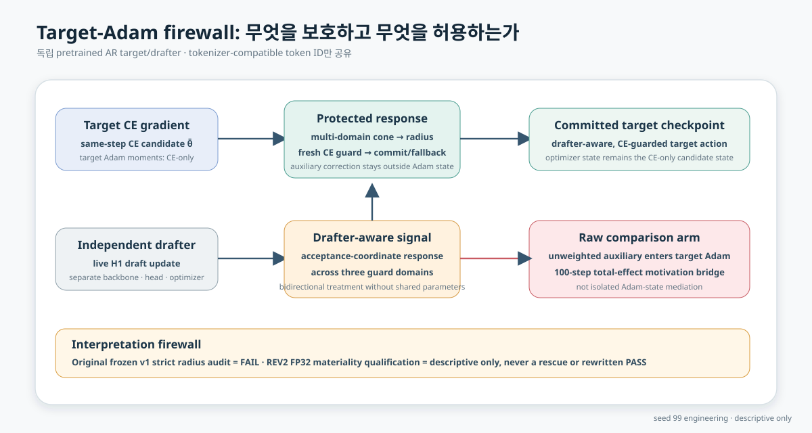
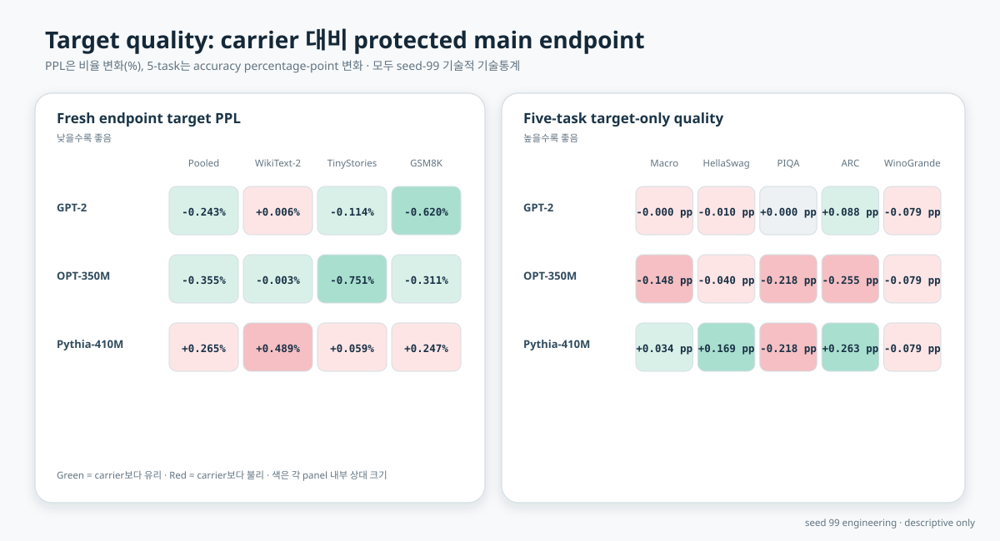
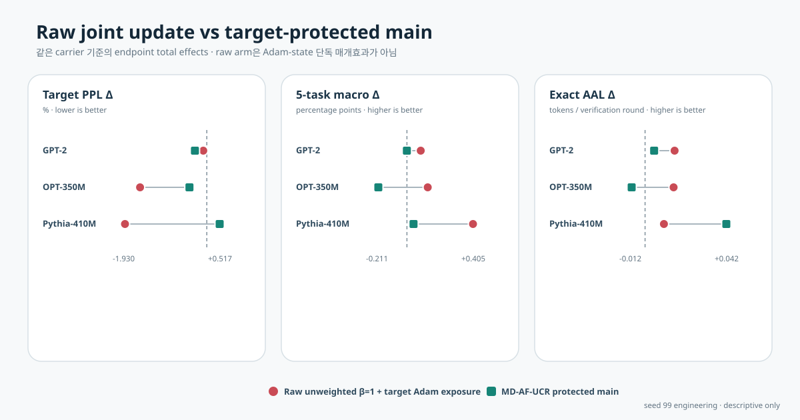
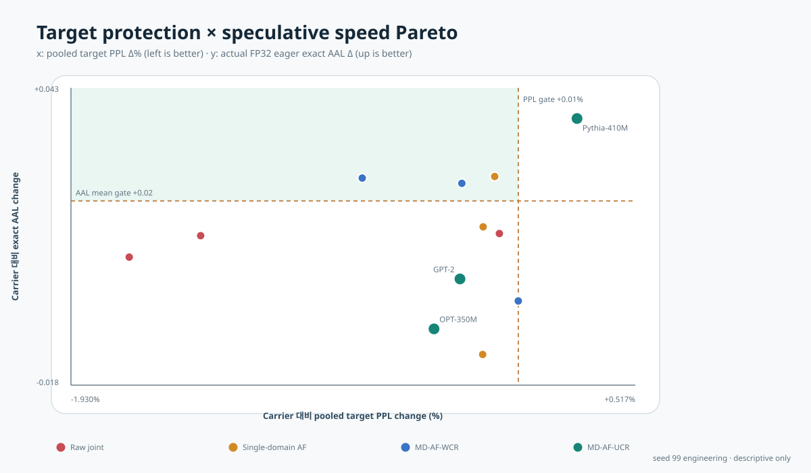
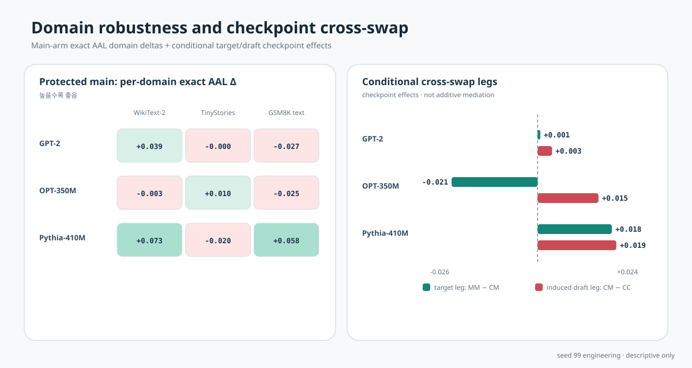
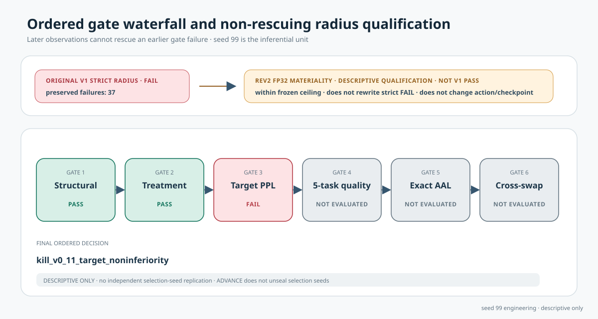

원래 strict audit의 실패는 최종 보고서에서도 FAIL이다. 다른 utility 결과나 REV2 envelope이 이를 rescue하지 않는다.
Independent AR · bidirectional joint training · v0.11
Target를 지키면서
drafter-aware하게
두 pretrained autoregressive model은 tokenizer-compatible token ID만 공유한다. Target Adam은 CE-only state로 방화벽을 세우고, drafter-aware acceptance response는 multi-domain cone, radius, fresh CE guard를 거쳐 parameter action으로만 들어간다.
separate backbones
separate LM heads
separate optimizers
actual FP32 eager exact rollout
seed 99 engineering
2 / 3protected-main target PPL pair gates
2 / 3protected-main five-task quality pair gates
0 / 3protected-main exact AAL pair gates
2 / 3conditional cross-swap pair gates
Research question
Bidirectional signal을 target damage 없이 쓸 수 있는가?
이 실험은 MEDUSA/EAGLE shared-head setting이 아니다. 독립 target과 독립 drafter를 함께 학습하되 target optimizer state에 auxiliary gradient를 직접 축적하지 않는 방법을 raw joint-update motivation bridge와 비교한다.
관측 max displacement/radius ratio는 1.00034099다. 이 분류는 checkpoint, action, lambda, optimizer state를 바꾸지 않으며 strict radius 판정을 다시 쓰지 않는다.

Target protection
Target 성능은 별도 endpoint로 직접 본다
Fresh endpoint PPL과 target-only five-task accuracy를 carrier checkpoint와 비교한다. Fixed pretrained base는 causal control이 아니다.

| Pair | Pooled PPL Δ | 5-task macro Δ | Exact AAL Δ | Prompt LCB | Target leg | Draft leg | AAL gate |
|---|---|---|---|---|---|---|---|
| GPT-2 ← DistilGPT-2 | -0.2429% PASS | -0.000 pp PASS | +0.004 | -0.028 descriptive | +0.001 | +0.003 | FAIL |
| OPT-350M ← OPT-125M | -0.3555% PASS | -0.148 pp FAIL | -0.006 | -0.041 descriptive | -0.021 | +0.015 | FAIL |
| Pythia-410M ← Pythia-70M | +0.2649% FAIL | +0.034 pp PASS | +0.037 | +0.003 descriptive | +0.018 | +0.019 | FAIL |
Motivation bridge
Raw contamination과 protected response를 같은 carrier에 놓는다
Raw와 protected main은 같은 seed의 endpoint total effect다. 학습 trajectory가 유도한 target–draft co-adaptation을 포함하며, raw 차이를 Adam-state 단독 원인으로 분해하지 않는다.

| Pair | Arm | PPL Δ | Macro Δ | AAL Δ | Interpretation |
|---|---|---|---|---|---|
| GPT-2 ← DistilGPT-2 | Raw joint | -0.0720% | +0.071 pp | +0.013 | total-effect bridge · Adam exposed |
| GPT-2 ← DistilGPT-2 | MD-AF-UCR | -0.2429% | -0.000 pp | +0.004 | protected main · CE-only Adam state |
| OPT-350M ← OPT-125M | Raw joint | -1.3674% | +0.107 pp | +0.013 | total-effect bridge · Adam exposed |
| OPT-350M ← OPT-125M | MD-AF-UCR | -0.3555% | -0.148 pp | -0.006 | protected main · CE-only Adam state |
| Pythia-410M ← Pythia-70M | Raw joint | -1.6772% | +0.341 pp | +0.009 | total-effect bridge · Adam exposed |
| Pythia-410M ← Pythia-70M | MD-AF-UCR | +0.2649% | +0.034 pp | +0.037 | protected main · CE-only Adam state |
Joint objective
Target protection과 speculative 변화량을 한 평면에서 본다
x축은 carrier 대비 pooled target PPL change, y축은 actual FP32 eager exact AAL change다. Teacher-forced overlap은 실제 acceptance length를 대신하지 않는다.

Robustness and attribution boundary
Domain floor와 cross-swap은 다른 질문이다
왼쪽은 protected-main의 domain별 actual exact AAL delta다. 오른쪽은 conditional checkpoint effect인 target leg와 induced draft leg다. 이는 not additive mediation이며 고유한 인과 분해가 아니다.

Prospective decision
먼저 실패한 gate가 결정을 고정한다
Radius audit lane은 six-gate scientific order와 분리된다. Ordered status와 observed pass도 분리해, 뒤 관측치가 앞 failure를 rescue하는 표현을 차단한다.

| # | Gate | Ordered status | Observed pass | Failure decision |
|---|---|---|---|---|
| 1 | Structural | PASS | true | kill_v0_11_structural |
| 2 | Treatment | PASS | true | kill_v0_11_no_treatment |
| 3 | Target PPL | FAIL | false | kill_v0_11_target_noninferiority |
| 4 | 5-task quality | NOT EVALUATED | false | kill_v0_11_target_noninferiority |
| 5 | Exact AAL | NOT EVALUATED | false | kill_v0_11_no_exact_aal_gain |
| 6 | Cross-swap | NOT EVALUATED | false | kill_v0_11_crossswap |
최종 ordered decision: kill_v0_11_target_noninferiority
이 페이지의 모든 utility 표와 figure는 engineering seed 99의 기술통계다. 독립 training-seed replication 없이 일반화나 확증적 우월성을 주장하지 않는다.